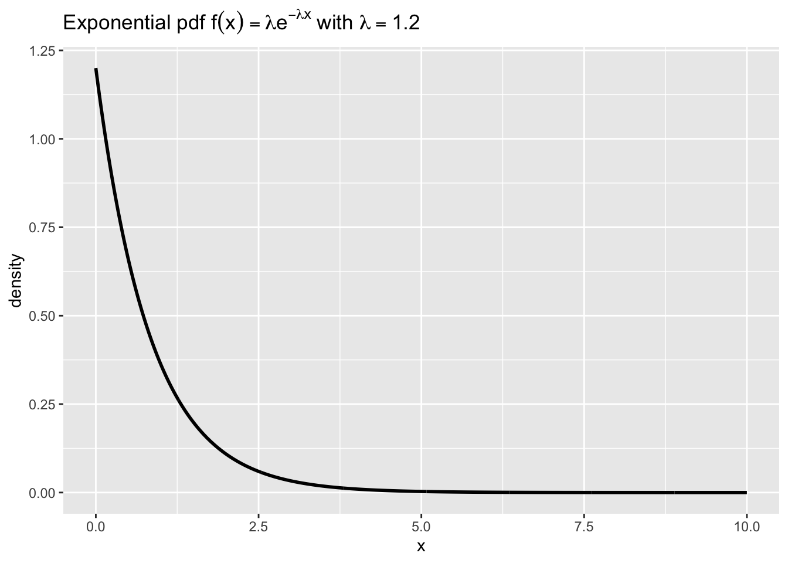
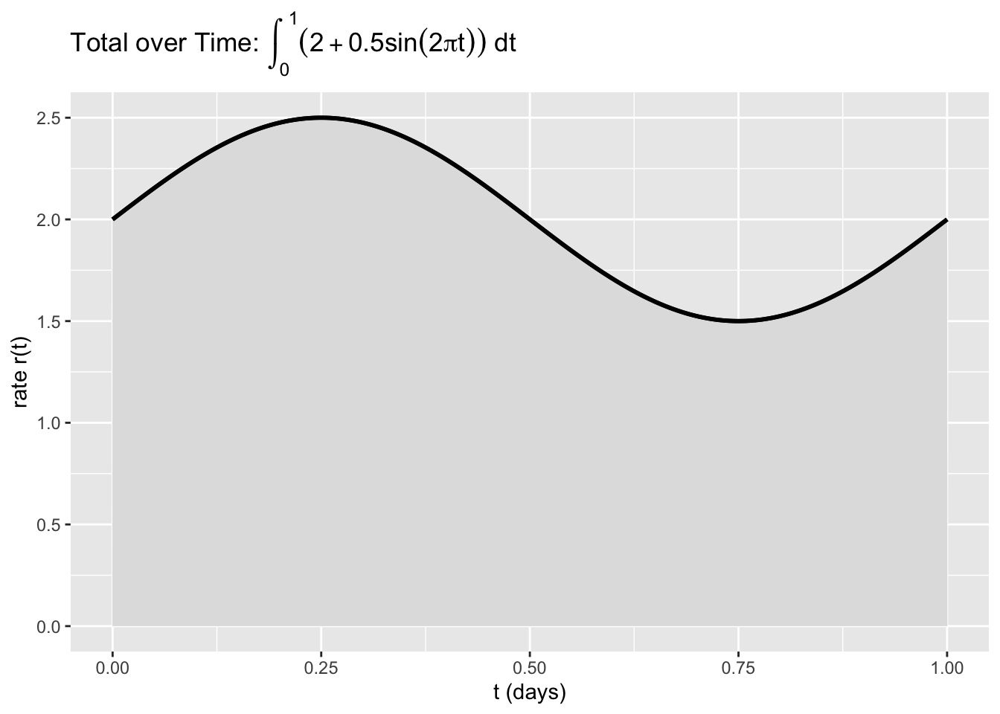

17Lecture 9: Integration in Data Science — Area, AUC, and Expected Value
Module 5: Calculus for Data Science - Week 3
17.1 Introduction
To close our calculus series, we put integration to work on the kinds of tasks you meet in data science: computing areas/aggregates, verifying probability densities, and calculating expected values. We will mix exact results (when available) with numerical integration using the trapezoid rule when formulas are unavailable or we only have sampled values.
Our focus is practical: interpret integrals in context, implement them cleanly in R, and explain results in plain language.
17.2 1. Probability Densities Integrate to 1
A probability density function (pdf)\(f(x)\) must satisfy two properties: \(f(x) \ge 0\) and \[
\int_{-\infty}^{\infty} f(x)\,dx = 1.
\] We will numerically verify this for the exponential density \(f(x)=\lambda e^{-\lambda x}\) on \([0,\infty)\) with \(\lambda=1.2\), using a large finite window.
17.2.1 1.1 Numeric Check: Exponential Density
The next code approximates \(\int_0^B \lambda e^{-\lambda x}\,dx\) by trapezoids for a large \(B\) and compares it to the exact value \(1 - e^{-\lambda B}\), which approaches 1 as \(B \to \infty\).
Code
# Purpose: Verify that an exponential pdf integrates to ~1 over a large window by trapezoids; compare to exact tail.# We also plot the density for context (black line).library(ggplot2)library(latex2exp)lambda <-1.2f <-function(x) lambda *exp(-lambda * x)# Trapezoid helper on [a,b] with n subintervalstrapz <-function(f, a, b, n) { xs <-seq(a, b, length.out = n +1) ys <-f(xs) dx <- (b - a) / n dx * (sum(ys) -0.5*(ys[1] + ys[length(ys)]))}B <-10# finite upper bound to approximate [0, ∞)n <-2000approx_mass <-trapz(f, 0, B, n)exact_trunc <-1-exp(-lambda * B) # exact mass on [0,B]data.frame(ApproxMass = approx_mass, ExactMassOn_0_to_B = exact_trunc, TailMassBeyondB =1- exact_trunc)
# Plot the density on [0,B]x <-seq(0, B, by =0.01)df <-data.frame(x = x, y =f(x))ggplot(df, aes(x, y)) +geom_line(color ="black", linewidth =1) +labs(title =TeX("Exponential pdf $f(x)=\\lambda e^{-\\lambda x}$ with $\\lambda=1.2$"),x ="x", y ="density")

Key Insight: On a large window \([0,B]\), the approximate area under the density is very close to \(1\); the small remainder is the tail mass beyond \(B\).
17.3 2. Expected Value as an Integral
For a continuous random variable \(X\) with pdf \(f(x)\), the expected value (mean) is \[
E[X] = \int_{-\infty}^{\infty} x f(x)\,dx.
\] We will compute \(E[X]\) numerically and compare to known exact values for common densities.
17.3.1 2.1 Exponential Mean (Exact vs Numeric)
For \(X \sim \text{Exponential}(\lambda)\), the exact mean is \(E[X] = \frac{1}{\lambda}\). We estimate it numerically on \([0,B]\) and compare.
Code
# Purpose: Estimate E[X] for an exponential pdf numerically and compare to the exact 1/lambda.library(ggplot2)library(latex2exp)lambda <-1.2f <-function(x) lambda *exp(-lambda * x)# Numeric E[X] on [0,B] by trapezoids (approximation)trapz <-function(f, a, b, n) { xs <-seq(a, b, length.out = n +1) ys <-f(xs) dx <- (b - a) / n dx * (sum(ys) -0.5*(ys[1] + ys[length(ys)]))}B <-12n <-4000# Integral of x f(x) on [0,B]xf <-function(x) x *f(x)E_num <-trapz(xf, 0, B, n)# Compare to exact E[X]=1/lambda (note: truncation introduces tiny bias)E_exact <-1/ lambdadata.frame(Numeric_Estimate = E_num, Exact_1_over_lambda = E_exact, AbsError =abs(E_num - E_exact))
Key Insight: The numeric estimate closely matches \(\frac{1}{\lambda}\) when the window is wide and the step is small. Truncating the integral at \(B\) introduces a small, controllable bias.
17.3.2 2.2 Normal Mean (Symmetry, Numeric Check)
For a standard normal density \(\phi(x)=\frac{1}{\sqrt{2\pi}}e^{-x^2/2}\), symmetry gives \(E[X]=0\). We verify numerically on a symmetric window.
Code
# Purpose: Numerically verify E[X]=0 for the standard normal by integrating x*phi(x) on a symmetric window.library(ggplot2)library(latex2exp)phi <-function(x) (1/sqrt(2*pi)) *exp(-x^2/2)xf <-function(x) x *phi(x)# Symmetric bounds to reduce truncation biasA <-5n <-4000trapz <-function(f, a, b, n) { xs <-seq(a, b, length.out = n +1) ys <-f(xs) dx <- (b - a) / n dx * (sum(ys) -0.5*(ys[1] + ys[length(ys)]))}E_num <-trapz(xf, -A, A, n)data.frame(Estimate_E_X = E_num, SymmetricWindow =paste0("[-", A, ", ", A, "]"))
Key Insight: With symmetric limits, the positive and negative contributions cancel, yielding a mean near \(0\), as theory predicts.
17.4 3. Area Under a Curve (Aggregate over Time)
Integrals also represent cumulative totals over time. Suppose a smoothed rate \(r(t)\) (e.g., sales per hour) is modeled by \[
r(t) = 2 + 0.5\sin(2\pi t), \quad t \in [0,1] \text{ day}.
\] Then the total over the day is \(\int_0^1 r(t)\,dt\). We compute this numerically and visualize the area with shading.
Code
# Purpose: Compute the total ∫_0^1 r(t) dt for r(t)=2 + 0.5 sin(2π t) and visualize the shaded area.library(ggplot2)library(latex2exp)r <-function(t) 2+0.5*sin(2*pi*t)# Grid and valuest <-seq(0, 1, by =0.001)rt <-r(t)# Trapezoid totaldx <-diff(t)traps <- dx * (rt[-length(rt)] + rt[-1]) /2total_num <-sum(traps)data.frame(Total_over_day = total_num)
Total_over_day
1 2
Code
# Shaded area plotdf <-data.frame(t = t, r = rt)ggplot(df, aes(t, r)) +geom_area(fill ="grey88", color ="black", linewidth =1) +geom_line(color ="black", linewidth =1) +labs(title =TeX("Total over Time: $\\int_0^1 (2 + 0.5\\sin(2\\pi t) )\\,dt$"),x ="t (days)", y ="rate r(t)" )

Key Insight: The shaded area represents the aggregate (total) for the day. For sinusoidal rates, the integral averages the ups and downs into one interpretable number (units of “quantity per day”).
17.5 4. Notes on Numerical Integration in Practice
Windows and tails: For unbounded domains, integrate on a wide window where tails are negligible, and report the tail mass if known.
Step size: Smaller steps improve accuracy but cost time; check convergence by refining \(n\).
Smoothness: Trapezoids work well for smooth curves; for jagged/noisy data, consider smoothing first or using adaptive methods later on.
17.6 Practice Problems
Let \(f(x)=\lambda e^{-\lambda x}\) with \(\lambda=0.8\).
Numerically verify \(\int_0^{\infty} f(x)\,dx \approx 1\) on \([0,12]\).
Estimate \(E[X]\) numerically and compare to \(\frac{1}{\lambda}\).
Using \(\phi(x)\) standard normal, estimate \(E[X^2]=\int_{-\infty}^{\infty} x^2\phi(x)\,dx\) on \([-5,5]\) and compare to the exact value \(1\).
Suppose \(r(t)=1+\sin(\pi t)\) on \([0,2]\) (time in hours). Compute \(\int_0^2 r(t)\,dt\) numerically and interpret it in context.
Create your own smooth rate function on \([0,1]\), plot it, and compute the total. Describe how changing the amplitude or frequency affects the total.
17.7 In this lesson, you learned to
Check that densities integrate to 1 and interpret tails on finite windows.
Compute expected values as integrals and verify them numerically for common distributions.
Interpret integrals as aggregates (area under a rate curve) and visualize with shaded plots.
Make sound choices about numerical windows and step sizes when exact formulas are unavailable.
17.8 Coming Up
Congratulations—you’ve completed the calculus module! As you move into future topics (time series and beyond), keep these tools handy: derivatives for local sensitivity and optimization, integrals for accumulation and expectation. They are the quiet engines powering a lot of data science.